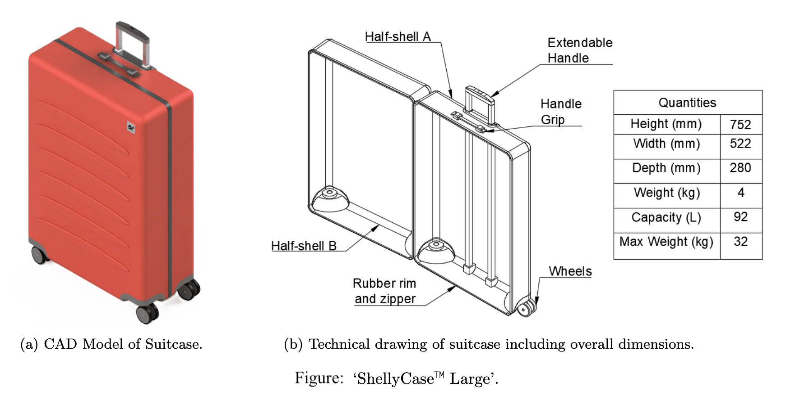

Product and Production Systems Optimisation Case Study: Suitcase Manufacturing Plant
Project overview
This project investigated how to optimise a consumer product design and its supporting production system. The product was a hard-shell suitcase of a hypothetical brand 'ShellyCase'. Two key performance indicators were targeted: manufacturing throughput and component durability.
Production system modelling
A discrete-event factory simulation was developed in SIMIO to analyse the existing production line. Processing times, layout constraints, and buffer capacities were incorporated. This established a baseline throughput and identified bottlenecks.
Throughput optimisation
Factory layout changes included reducing storage footprint, adding a second extrusion machine, and rebalancing assembly operations. Buffer sizes were adjusted to stabilise flow. These changes more than doubled throughput while improving machine utilisation. Higher production required revised shipping schedules and increased component supply rates. Cost implications were assessed against projected revenue growth. The optimised system demonstrated improved scalability for future demand.

Product durability analysis
Warranty data indicated wheel failure as the primary reliability issue. Alternative wheel designs from the existing supplier were evaluated. This avoided disruption to the established supply chain.
FEA design optimisation
Dynamic impact simulations compared double-spinner and single-spinner wheel designs. Stress analysis showed improved load tolerance for the single-wheel configuration. The proposed change significantly increased the estimated safety factor.
Project outcome
The combined optimisations increased production throughput by over 100% and improved wheel impact safety factor by roughly 70%. Further physical testing and supply chain refinement were recommended before full implementation.